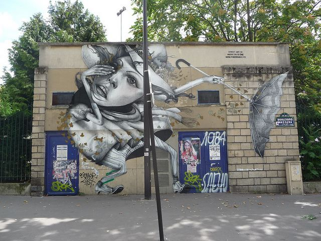
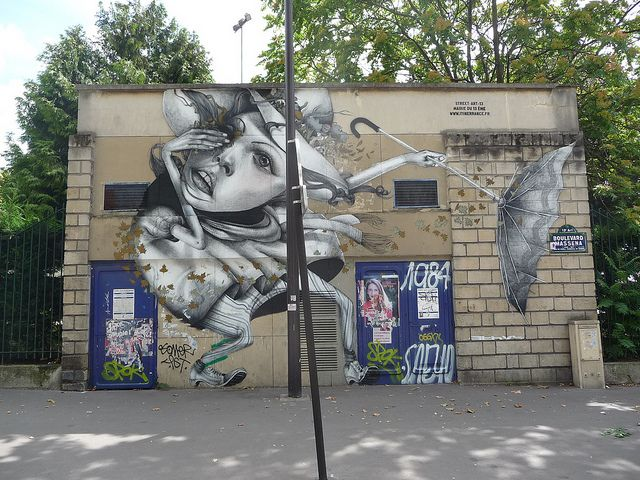

Home
Welcome to the official Bristol Graffiti Website. As you scroll through this website, you will experience all aspects of the graffiti scenes within Bristol. You will learn the difference between pieces, tags and much more different styles to graffiti.

Pieces
The Graffiti term 'piece', short of masterpiece, is used to describe a large, complex, time-consuming graffiti painting, usually painted by skilled and experienced writers.


Tags
Graffiti tags are a form of Graffiti represented by stylized signature of a writer ’s chosen name or the identifying mark of a group name.
Drone
Drone is a graffiti writer who does many tags and throwies. Drone can be seen all over bristol but you have a higher chance of seeing his work in easton and surrounding areas.


FAMOUS PARIS PIECES
It looks like glitter and glamor in the heart of the city, but there is a vivid urban scene as well. As you know, French are probably the most revolutionary and rebellious people around. So no wonder that you can find some sharp political criticism in the local street art.

 

Contact Form
All comments will be sent to: BristolGraffWebsite@example.com